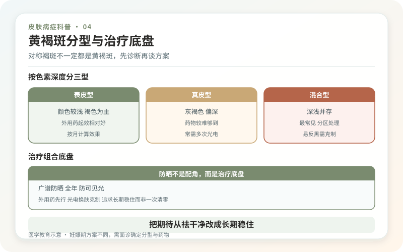
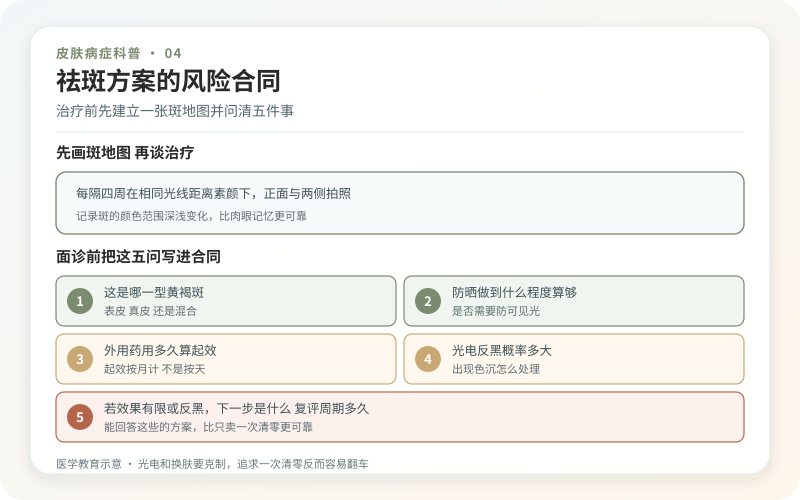

黄褐斑很会制造一种错觉：只要找到“最强祛斑仪器”，就能把色素一次扫干净。真相是，它是一种容易波动和复发的获得性色素增加问题，治疗目标是逐渐变淡并减少反复，而不是承诺永久归零。日晒、可见光、妊娠和激素变化、遗传易感及炎症都可能参与，女性更常见，但男性也会发生。

对称褐斑不一定都是黄褐斑
典型黄褐斑多位于双侧颧颊、额头、鼻背或上唇，呈边界不完全规则的浅褐到深褐色斑片。医生会结合分布、肤色、病程和用药史判断，有时用伍德灯或皮肤镜辅助。雀斑、日光性黑子、颧部褐青色痣、炎症后色沉、色素性接触皮炎甚至某些药物相关色素改变，都可能被误叫成“黄褐斑”。病名错了，治疗越积极越可能无效。
若色斑单侧新发、边界和颜色明显不均、表面破溃结痂、快速增大或伴出血，应先排除其他皮肤病和肿瘤，不要直接做激光。

防晒不是配角，而是治疗底盘
日常优先广谱、SPF30及以上且能稳定使用的防晒产品，结合遮阳帽、伞、衣物和避开强烈日照。足量涂、在户外按需要补涂，比追逐一个夸张的SPF数字更重要。可见光可能加重部分黄褐斑，尤其较深肤色人群，可与医生讨论含氧化铁的有色防晒。
防晒也不是从此不能见光。目标是减少累积暴露和晒伤，而不是把生活变成密不透风的避光实验。室内是否需要频繁补涂，要看窗边距离、日照和活动，不必制造统一焦虑。
外用药通常先行，起效按月计算
医生可能使用氢醌、维A酸类、壬二酸、曲酸或含多种成分的复方方案。它们都有刺激、接触性皮炎或色素异常风险，浓度越高并不等于越适合。氢醌长期无监管滥用还可能导致外源性褐黄病。口服氨甲环酸对部分难治患者可能有帮助，但属于需要严格筛查血栓风险、药物相互作用和禁忌证的医疗决定，绝不能当作普通“美白丸”。
妊娠、备孕和哺乳期应主动说明，治疗选择会变化。任何美白产品一涂就持续刺痛、脱屑、红肿，都可能通过炎症让色沉更重。
光电和换肤为什么要克制？
激光、强脉冲光、化学换肤等可以作为部分人的辅助方案，但不是所有黄褐斑的一线“清除术”。肤色、色素深浅、当前炎症、设备波长和能量都会影响结果；过度治疗可能导致反黑、色素减退，甚至形成斑驳色差。靠谱咨询会说明疗程、复发、停机标准和治疗失败后的方案，而不是只展示刚做完的亮白照片。
治疗期建议固定光线、距离和相机，每月拍照一次。每天贴镜观察，会把正常的光线差异当成反弹。把改善分成颜色、面积、均匀度和主观困扰几个维度，比只问“掉了百分之几”更真实。
把期待从“祛干净”改成“长期稳住”
温和清洁、规律保湿、减少摩擦和刺激，能降低炎症性加深。不要同时叠加刷酸、磨砂、美白精华和家用美容仪；一旦出问题，很难判断是谁导致。治疗稳定后仍需维持防护，激素诱因消失也不保证马上褪净。
黄褐斑不损害身体健康，却可能影响自信，这份困扰值得认真对待。但值得不等于必须猛治。能让颜色逐步变淡、复发更少、皮肤保持健康，就是有价值的结果。
开始治疗前，先建立一张“斑地图”
在自然光下拍正面、左右侧面，标出片状黄褐斑、点状晒斑、灰蓝小点和仍在发炎的区域。把妊娠、口服避孕药、激素治疗、既往祛斑和反黑经历写在旁边。这样复评时能区分“黄褐斑变淡”和“日光性黑子被打掉”，避免用一个总面积数字掩盖不同病种。
治疗前也应确认是否有近期海边、高原、户外运动或备孕计划。刚做完强光电却马上暴晒，会让风险显著增加；正在备孕则会改变外用和口服选择。日程和人生计划不是附属信息，而是方案的一部分。
给祛斑方案加上“风险合同”
要求医生说明每一步解决什么、多久评价、可能出现何种色沉或色减、出现后如何处理。若使用口服氨甲环酸，应明确血栓史、吸烟、偏头痛、避孕药和家族风险筛查，而不是只签一张“自愿美白”。光电治疗还要问是否先做测试、眼保护怎样完成、恢复期能否配合。
建议以三个月为一个观察单位，比较同光线照片和皮肤耐受，不以一次治疗后的结痂脱落验收。若颜色稍淡却长期刺痛脱皮，这不是高质量改善；若方案让你无法持续，也应调整。黄褐斑的长期胜率来自可执行，而非最强能量。